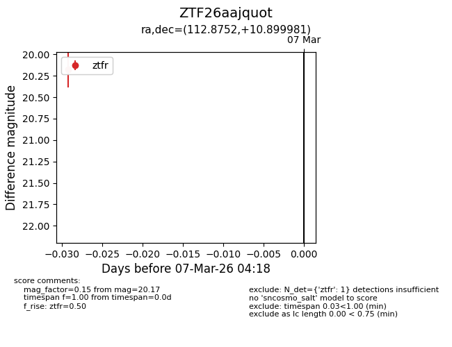
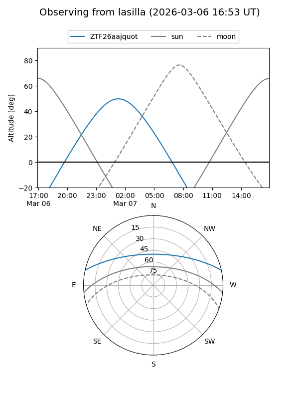
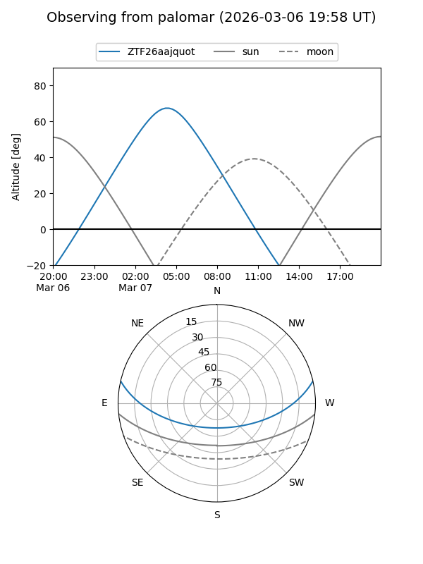

ZTF26aajquot
Target ZTF26aajquot at 2026-03-07 04:19
Aliases and brokers:
FINK: link
Lasair: link
ALeRCE: link
alt names
ZTF26aajquot (ztf,fink_ztf)
Coordinates:
equatorial (ra, dec) = 112.8752,+10.89998
equatorial (HMS+DMS) = 07:31:30.04,+10:53:59.93
galactic (l, b) = (207.5900,+13.78130)
Flags:
Photometry:
last ztfr=20.17
1 ztfr detections
Lightcurve

Visibility


Additional plots